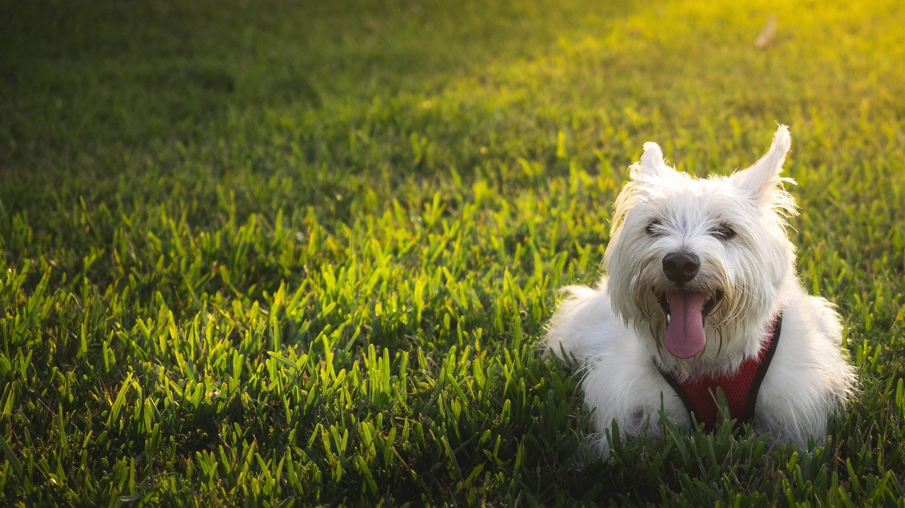

Animales favoritos

Me gustan los perros porque son leales y alegres, siempre dispuestos a jugar y acompañarte.

Me gustan los gatos por ser independientes y curiosos, observan todo a su alrededor con elegancia.
Mi nombre es Aarón Bermúdez Quintero. Soy estudiante y programador. Me gusta crear páginas web, conectar bases de datos y que todo funcione correctamente. Mi lenguaje favorito es HTML porque me gusta ver como es que las paginas se van construyendo poco a poco con todo lo que se sobre programacion.
Me gustan los perros porque son leales y alegres, siempre dispuestos a jugar y acompañarte.
Me gustan los gatos por ser independientes y curiosos, observan todo a su alrededor con elegancia.